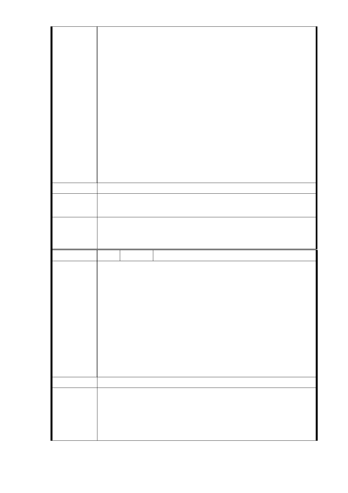

的利益。
四、臺北市捷運信義線東延段如時間許可理應給予三個月整
合期限之機會，合理解決 R4 站用地及五十多年危屋更
新。市民居家安全向為郝市長所重視，應藉此案發揮為
市政成績加分。倘若三個月期限期滿，地主及住戶仍無
法達成共識，那權益之損害由他們完全自負，不能抱怨
政府了。
五、全部地主及住戶整合完成，申請都更獎勵並與捷運共構
開發，辦理銀行信託為唯一窗口，選定建商與提存保證
金，由信託銀行投資，與捷運局協商興建，完工分配為
全體居民殷切期盼！
六、恭請各位長官、各位委員照顧成全為檮！
報告人：松臺公寓地主委託代表鍾志成
建議辦法
市 府 回 應 同編號 16-1 研析意見。
意見
委員會決
議
一、R04 站北側捷一用地，採設置捷運必要設施出入口最小
用地面積 510 ㎡之替代方案取得用地，並辦理土地開發。
二、同「市府回應意見」。
編 號 17 陳情人 賴永章（R04 捷二）
1.根據市府人員說明，原地主戶只分回 55％（但根據報載 92
年捷運文湖線內湖站聯合開發案，市府承諾地主可分回
57.77％，得標建商變更都計後，竟可分得 68％）公平性
與正當性備受質疑？若聯開無法符合大多數地主認同，本
地主戶堅決反對此開發案。
陳 情 理 由 2.捷運信義線象山站至暫定之 R04 車站，距離差不多五百公
尺，本人覺得無開發之必要，就直接在廣慈 R03 開發設出
口即可（公有地開發爭議性就比較少）如板南線龍山寺站
至江子翠站的距離至少超過 2 公里以上。
3.若 R04 不設站，可在松友公園（公有地）設 U-Bike 腳踏
車站，公車信義幹線亦可轉乘至象山站。
建議辦法
1.同編號 2、9-1 研析意見。
市府回應
意見
2.內湖站本府捷運局刻正辦理土地鑑價及建物建造成本之鑑
定作業中，本府於進行用地協議時，並未承諾當時用地地
主可分回 57.77％之比率，有關報載內容本府捷運工程已
多次澄清及說明。
- 66 -